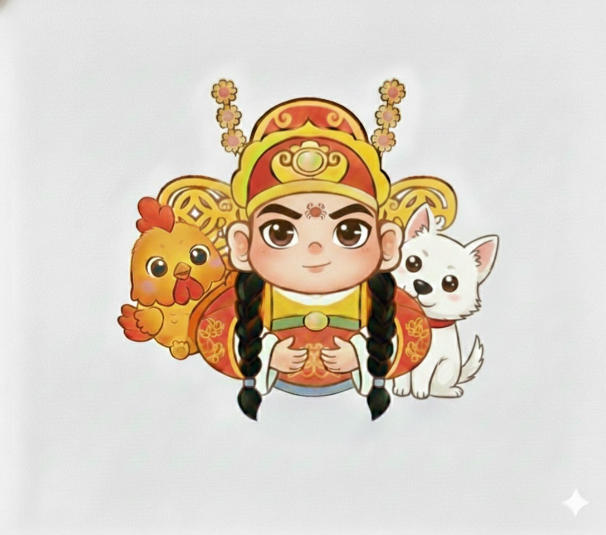

田 禾 宮
專業紫微命盤排版系統 (大師詳批版)
緣主資料錄入
姓名
出生年份 (西元)
月份
1月
2月
3月
4月
5月
6月
7月
8月
9月
10月
11月
12月
日期
出生時辰
子 (23-01)
丑 (01-03)
寅 (03-05)
卯 (05-07)
辰 (07-09)
巳 (09-11)
午 (11-13)
未 (13-15)
申 (15-17)
酉 (17-19)
戌 (19-21)
亥 (21-23)
開啟天機・獲取雙年度深度解析